Last updated: 2023-04-30
Checks: 7 0
Knit directory: PTRS-Rat-Analysis/
This reproducible R Markdown analysis was created with workflowr (version 1.7.0). The Checks tab describes the reproducibility checks that were applied when the results were created. The Past versions tab lists the development history.
Great! Since the R Markdown file has been committed to the Git repository, you know the exact version of the code that produced these results.
Great job! The global environment was empty. Objects defined in the global environment can affect the analysis in your R Markdown file in unknown ways. For reproduciblity it’s best to always run the code in an empty environment.
The command set.seed(20230404) was run prior to running
the code in the R Markdown file. Setting a seed ensures that any results
that rely on randomness, e.g. subsampling or permutations, are
reproducible.
Great job! Recording the operating system, R version, and package versions is critical for reproducibility.
Nice! There were no cached chunks for this analysis, so you can be confident that you successfully produced the results during this run.
Great job! Using relative paths to the files within your workflowr project makes it easier to run your code on other machines.
Great! You are using Git for version control. Tracking code development and connecting the code version to the results is critical for reproducibility.
The results in this page were generated with repository version 6148d6d. See the Past versions tab to see a history of the changes made to the R Markdown and HTML files.
Note that you need to be careful to ensure that all relevant files for
the analysis have been committed to Git prior to generating the results
(you can use wflow_publish or
wflow_git_commit). workflowr only checks the R Markdown
file, but you know if there are other scripts or data files that it
depends on. Below is the status of the Git repository when the results
were generated:
Ignored files:
Ignored: .DS_Store
Ignored: .Rhistory
Ignored: .Rproj.user/
Ignored: GEMMA/
Ignored: analysis/.DS_Store
Ignored: analysis/.Rhistory
Ignored: code/.DS_Store
Untracked files:
Untracked: Results/
Untracked: code/Ac_GEMMA_BSLMM.sh
Untracked: code/generate_GRMs.yaml
Untracked: code/run_BSLMM.yaml
Unstaged changes:
Modified: analysis/Run_PrediXcan.Rmd
Note that any generated files, e.g. HTML, png, CSS, etc., are not included in this status report because it is ok for generated content to have uncommitted changes.
These are the previous versions of the repository in which changes were
made to the R Markdown (analysis/Permutation_Test.Rmd) and
HTML (docs/Permutation_Test.html) files. If you’ve
configured a remote Git repository (see ?wflow_git_remote),
click on the hyperlinks in the table below to view the files as they
were in that past version.
| File | Version | Author | Date | Message |
|---|---|---|---|---|
| Rmd | 6148d6d | sabrina-mi | 2023-04-30 | wflow_publish("analysis/Permutation_Test.Rmd") |
dir="/Users/sabrinami/Library/CloudStorage/Box-Box/rat-genomic-analysis/PTRS-2023/"suppressMessages(library(tidyverse))
suppressMessages(library(glue))
suppressMessages(library(data.table))
suppressMessages(library(R.utils))
suppressMessages(library(stringr))
suppressMessages(library(RSQLite))
suppressMessages(library(vroom))
"%&%" = function(a,b) paste(a,b,sep="")
headleft <-function(x,nc=4,...) {nc=min(nc,ncol(x)); head(x[,1:nc],...) }devtools::source_gist("a925fea01b365a8c605e")ℹ Sourcing gist "a925fea01b365a8c605e"
ℹ SHA-1 hash of file is "01da6a099ce8e3272b3036fcf075b7afa5287dad"devtools::source_gist("38431b74c6c0bf90c12f")ℹ Sourcing gist "38431b74c6c0bf90c12f"
ℹ SHA-1 hash of file is "cbeca7fd9bf1602dee41c4f1880cc3a5e8992303"devtools::source_gist("115403f16bec0a0e871f3616d552ce9b")ℹ Sourcing gist "115403f16bec0a0e871f3616d552ce9b"
ℹ SHA-1 hash of file is "06f294311936f3783e4d652bac96a59da93a765e"devtools::source_gist("fa55bc3b656f5273830afc4c7fe101a9")ℹ Sourcing gist "fa55bc3b656f5273830afc4c7fe101a9"
ℹ SHA-1 hash of file is "9ff5a40756a94d0e11ad4b2c56a7fcfa963b14ce"pheno_heng_file = dir %&% "RatData/phenotypes/obesity_upublished_data_residuals_PalmerLab.csv"
pheno_heng_df = read_csv(pheno_heng_file) %>% select(-`...1`)New names:
Rows: 6147 Columns: 7
── Column specification
──────────────────────────────────────────────────────── Delimiter: "," chr
(1): rfid dbl (6): ...1, bmi_wo_tail, length_w_tail_cm, bmi_w_tail,
length_wo_tail_cm,...
ℹ Use `spec()` to retrieve the full column specification for this data. ℹ
Specify the column types or set `show_col_types = FALSE` to quiet this message.
• `` -> `...1`pheno_heng_df <- pheno_heng_df %>% select(IID=rfid,bmi_hen=bmi_w_tail,bodylen_heng=length_w_tail_cm) %>% filter(!is.na(bodylen_heng))
rats_heng <- pheno_heng_df$IID
trait_df <- pheno_heng_df %>% select(IID,bodylen = bodylen_heng) orth.rats <- read_tsv(dir %&% "RatXcan/ortholog_genes_rats_humans.tsv", col_names = TRUE)Rows: 22777 Columns: 4
── Column specification ────────────────────────────────────────────────────────
Delimiter: "\t"
chr (4): ensembl_gene_id, external_gene_name, rnorvegicus_homolog_ensembl_ge...
ℹ Use `spec()` to retrieve the full column specification for this data.
ℹ Specify the column types or set `show_col_types = FALSE` to quiet this message.sqlite <- dbDriver("SQLite")
braindb <- dbConnect(sqlite, dir %&% "RatXcan/Br_elasticNet.db")
extra <- dbGetQuery(braindb,"select * from extra")
orth.rats <- orth.rats %>% left_join(extra,by=c("rnorvegicus_homolog_ensembl_gene"="gene")) %>% arrange(pred.perf.pval)
dbDisconnect(braindb)pred_expr_Br_hki <- vroom::vroom(dir %&% "RatXcan/Results/Br_EN__predict.txt") %>% select(-c(FID))Rows: 12666 Columns: 5603
── Column specification ────────────────────────────────────────────────────────
Delimiter: "\t"
chr (2): FID, IID
dbl (5601): ENSRNOG00000040300, ENSRNOG00000050129, ENSRNOG00000040316, ENSR...
ℹ Use `spec()` to retrieve the full column specification for this data.
ℹ Specify the column types or set `show_col_types = FALSE` to quiet this message.object.size(pred_expr_Br_hki)/1e6569.3 bytesdim(pred_expr_Br_hki)[1] 12666 5602pred_expr_Br_hki <- pred_expr_Br_hki %>% filter(IID %in% rats_heng)
dim(pred_expr_Br_hki)[1] 5642 5602object.size(pred_expr_Br_hki)/1e6254 bytes#saveRDS(pred_expr_Br_hki,file= dir %&% "RatXcan/Results/Br__predict_w_bodylength.RDS")yan_weights_df <- read_tsv(dir %&% "PTRS-models/elastic_net_alpha_0.1_British.export_model/weights.height.tsv.gz")Rows: 7044 Columns: 39
── Column specification ────────────────────────────────────────────────────────
Delimiter: "\t"
chr (1): gene_id
dbl (38): model_0, model_1, model_2, model_3, model_4, model_5, model_6, mod...
ℹ Use `spec()` to retrieve the full column specification for this data.
ℹ Specify the column types or set `show_col_types = FALSE` to quiet this message.yan_weights_df <- yan_weights_df %>% separate(gene_id,sep="\\.",c("gene_id","ver")) %>% select(-ver) %>% rename(gene_name=gene_id)library(rhdf5)
in.file <- dir %&% "PTRS-models/spxcan2ptrs_original_scale_pt.GIANT_HEIGHT_YENGO_2022.Muscle_Skeletal.results.h5"
ext_weights <- function(hd5file) {
## get atable of weights for different models from a h5 file
h5.data <- h5read(hd5file, "/")
bb = h5.data[["dataset_0"]][["betahat"]]
ll = h5.data[["dataset_0"]][["lambda_seq"]]
gg = h5.data[["genes"]]
ptrs.weights <- bb %>% data.frame() %>%
setnames(., names(.), gsub("\\..*","",gg)) %>%
rownames_to_column(var = "model") %>%
mutate(model = glue::glue("model_{model}")) %>%
column_to_rownames(var = "model") %>%
t() %>% data.frame() %>%
rownames_to_column(var = "gene_name")
return(ptrs.weights)
}
fes_weights_df = ext_weights(in.file)
#fes_weights_df = fes_weights_df %>% select(gene_name, all_of(model_name)) %>% rename(weight=model_name)map_weight_and_calc_ptrs <- function(expr, weights,order_model_name="model_35")
{
# ## change gene names in columns to human gene names
# ind <- match(colnames(expr)[-1], orth.rats$rnorvegicus_homolog_ensembl_gene)
# colnames(expr)[-1] <- orth.rats$ensembl_gene_id[ind]
## change weight genes to rat genes
ind = match(weights$gene_name, orth.rats$ensembl_gene_id)
weights$gene_name = orth.rats$rnorvegicus_homolog_ensembl_gene[ind]
## keep only predicted genes
weights <- weights %>% filter(gene_name %in% colnames(expr)[-1])
## if gene is repeated, keep the one that has largest weight magnitude
weights <- droprep(
weights %>%
filter(gene_name %in% colnames(expr)[-1]) %>%
mutate(magni = abs(.data[[order_model_name]]) ),
repvar="gene_name",
sortvar="magni",
decreasing=TRUE) %>%
select(-magni)
## call calc_ptrs(expr,weights)
calc_ptrs(expr,weights)
}Shuffle weights
nsim = 1000
ngenes = nrow(fes_weights_df)
sim_ptrs_df <- function(ptrs.weights, model_name){
fes_weights_df = fes_weights_df %>% select(gene_name, all_of(model_name)) %>% rename(weight=model_name)
fes_weights_df$invnorm_weight = invnorm(fes_weights_df$weight)
sim_weights_mat = sample(fes_weights_df$invnorm_weight,nsim*ngenes,replace=TRUE) %>% matrix(ngenes,nsim)
colnames(sim_weights_mat) = paste0("sim_",1:nsim)
fes_weights_sim_df <- cbind(fes_weights_df,sim_weights_mat)
ptrs_Br_hki_feswei_df <- map_weight_and_calc_ptrs(pred_expr_Br_hki,fes_weights_sim_df,order_model_name="weight")
}
plot_trait <- function(ptrs.weights,model_name,res.dir){
ptrs_Br_hki_feswei_df = sim_ptrs_df(ptrs.weights,model_name)
ptrs_Br_hki_feswei_df %>% inner_join(trait_df,by=c("IID"="IID")) %>% ggplot(aes(invnorm_weight,bodylen))+geom_smooth() + theme_bw(base_size = 15)+ ggtitle("bodylength vs. invnorm fes " %&% model_name %&% " weights ptrs")
ggsave(res.dir %&% "invnorm_bodylen_" %&% model_name %&% ".png")
ptrs_Br_hki_feswei_df %>% inner_join(trait_df,by=c("IID"="IID")) %>% ggplot(aes(weight,bodylen))+geom_smooth() + theme_bw(base_size = 15) + ggtitle("bodylength vs. fes weights ptrs " %&% model_name)
ggsave(res.dir %&% "weights_bodylen_" %&% model_name %&% ".png")
}for (mmm in names(fes_weights_df)[-1]) {
plot_trait(fes_weights_df, mmm, dir %&% "PTRS-models/plots/")
break
}Warning: Using an external vector in selections was deprecated in tidyselect 1.1.0.
ℹ Please use `all_of()` or `any_of()` instead.
# Was:
data %>% select(model_name)
# Now:
data %>% select(all_of(model_name))
See <https://tidyselect.r-lib.org/reference/faq-external-vector.html>.
This warning is displayed once every 8 hours.
Call `lifecycle::last_lifecycle_warnings()` to see where this warning was
generated.Saving 7 x 5 in image
`geom_smooth()` using method = 'gam' and formula = 'y ~ s(x, bs = "cs")'
Saving 7 x 5 in image
`geom_smooth()` using method = 'gam' and formula = 'y ~ s(x, bs = "cs")'for (mmm in names(fes_weights_df)[-1]) {
ptrs_Br_hki_feswei_df = sim_ptrs_df(fes_weights_df, mmm)
tempo = ptrs_Br_hki_feswei_df %>% inner_join(trait_df,by=c("IID"="IID"))
print(mmm)
print("festus weights:")
print(cor.test(tempo$weight,tempo$bodylen))
print("invnorm:")
print(cor.test(tempo$invnorm_weight,tempo$bodylen))
}[1] "model_1"
[1] "festus weights:"
Pearson's product-moment correlation
data: tempo$weight and tempo$bodylen
t = -4.8349, df = 5640, p-value = 1.368e-06
alternative hypothesis: true correlation is not equal to 0
95 percent confidence interval:
-0.09018928 -0.03821561
sample estimates:
cor
-0.06424601
[1] "invnorm:"
Pearson's product-moment correlation
data: tempo$invnorm_weight and tempo$bodylen
t = -0.17486, df = 5640, p-value = 0.8612
alternative hypothesis: true correlation is not equal to 0
95 percent confidence interval:
-0.02842109 0.02376756
sample estimates:
cor
-0.002328349
[1] "model_2"
[1] "festus weights:"
Pearson's product-moment correlation
data: tempo$weight and tempo$bodylen
t = -4.8349, df = 5640, p-value = 1.368e-06
alternative hypothesis: true correlation is not equal to 0
95 percent confidence interval:
-0.09018928 -0.03821561
sample estimates:
cor
-0.06424601
[1] "invnorm:"
Pearson's product-moment correlation
data: tempo$invnorm_weight and tempo$bodylen
t = -0.17486, df = 5640, p-value = 0.8612
alternative hypothesis: true correlation is not equal to 0
95 percent confidence interval:
-0.02842109 0.02376756
sample estimates:
cor
-0.002328349
[1] "model_3"
[1] "festus weights:"
Pearson's product-moment correlation
data: tempo$weight and tempo$bodylen
t = -4.8349, df = 5640, p-value = 1.368e-06
alternative hypothesis: true correlation is not equal to 0
95 percent confidence interval:
-0.09018928 -0.03821561
sample estimates:
cor
-0.06424601
[1] "invnorm:"
Pearson's product-moment correlation
data: tempo$invnorm_weight and tempo$bodylen
t = -0.17486, df = 5640, p-value = 0.8612
alternative hypothesis: true correlation is not equal to 0
95 percent confidence interval:
-0.02842109 0.02376756
sample estimates:
cor
-0.002328349
[1] "model_4"
[1] "festus weights:"
Pearson's product-moment correlation
data: tempo$weight and tempo$bodylen
t = -4.8349, df = 5640, p-value = 1.368e-06
alternative hypothesis: true correlation is not equal to 0
95 percent confidence interval:
-0.09018928 -0.03821561
sample estimates:
cor
-0.06424601
[1] "invnorm:"
Pearson's product-moment correlation
data: tempo$invnorm_weight and tempo$bodylen
t = -0.17526, df = 5640, p-value = 0.8609
alternative hypothesis: true correlation is not equal to 0
95 percent confidence interval:
-0.02842643 0.02376222
sample estimates:
cor
-0.002333692
[1] "model_5"
[1] "festus weights:"
Pearson's product-moment correlation
data: tempo$weight and tempo$bodylen
t = -4.8349, df = 5640, p-value = 1.368e-06
alternative hypothesis: true correlation is not equal to 0
95 percent confidence interval:
-0.09018928 -0.03821561
sample estimates:
cor
-0.06424601
[1] "invnorm:"
Pearson's product-moment correlation
data: tempo$invnorm_weight and tempo$bodylen
t = -0.17486, df = 5640, p-value = 0.8612
alternative hypothesis: true correlation is not equal to 0
95 percent confidence interval:
-0.02842114 0.02376751
sample estimates:
cor
-0.002328399
[1] "model_6"
[1] "festus weights:"
Pearson's product-moment correlation
data: tempo$weight and tempo$bodylen
t = -4.8349, df = 5640, p-value = 1.368e-06
alternative hypothesis: true correlation is not equal to 0
95 percent confidence interval:
-0.09018928 -0.03821562
sample estimates:
cor
-0.06424602
[1] "invnorm:"
Pearson's product-moment correlation
data: tempo$invnorm_weight and tempo$bodylen
t = -0.18997, df = 5640, p-value = 0.8493
alternative hypothesis: true correlation is not equal to 0
95 percent confidence interval:
-0.02862213 0.02356647
sample estimates:
cor
-0.00252955
[1] "model_7"
[1] "festus weights:"
Pearson's product-moment correlation
data: tempo$weight and tempo$bodylen
t = -4.8349, df = 5640, p-value = 1.368e-06
alternative hypothesis: true correlation is not equal to 0
95 percent confidence interval:
-0.09018928 -0.03821562
sample estimates:
cor
-0.06424602
[1] "invnorm:"
Pearson's product-moment correlation
data: tempo$invnorm_weight and tempo$bodylen
t = -0.18802, df = 5640, p-value = 0.8509
alternative hypothesis: true correlation is not equal to 0
95 percent confidence interval:
-0.02859615 0.02359246
sample estimates:
cor
-0.002503547
[1] "model_8"
[1] "festus weights:"
Pearson's product-moment correlation
data: tempo$weight and tempo$bodylen
t = -4.8346, df = 5640, p-value = 1.37e-06
alternative hypothesis: true correlation is not equal to 0
95 percent confidence interval:
-0.09018578 -0.03821208
sample estimates:
cor
-0.06424249
[1] "invnorm:"
Pearson's product-moment correlation
data: tempo$invnorm_weight and tempo$bodylen
t = -0.097142, df = 5640, p-value = 0.9226
alternative hypothesis: true correlation is not equal to 0
95 percent confidence interval:
-0.02738705 0.02480180
sample estimates:
cor
-0.001293507
[1] "model_9"
[1] "festus weights:"
Pearson's product-moment correlation
data: tempo$weight and tempo$bodylen
t = -4.8346, df = 5640, p-value = 1.37e-06
alternative hypothesis: true correlation is not equal to 0
95 percent confidence interval:
-0.09018583 -0.03821214
sample estimates:
cor
-0.06424255
[1] "invnorm:"
Pearson's product-moment correlation
data: tempo$invnorm_weight and tempo$bodylen
t = -0.1592, df = 5640, p-value = 0.8735
alternative hypothesis: true correlation is not equal to 0
95 percent confidence interval:
-0.02821274 0.02397596
sample estimates:
cor
-0.00211983
[1] "model_10"
[1] "festus weights:"
Pearson's product-moment correlation
data: tempo$weight and tempo$bodylen
t = -4.8393, df = 5640, p-value = 1.337e-06
alternative hypothesis: true correlation is not equal to 0
95 percent confidence interval:
-0.09024840 -0.03827513
sample estimates:
cor
-0.06430538
[1] "invnorm:"
Pearson's product-moment correlation
data: tempo$invnorm_weight and tempo$bodylen
t = -0.22461, df = 5640, p-value = 0.8223
alternative hypothesis: true correlation is not equal to 0
95 percent confidence interval:
-0.02908297 0.02310549
sample estimates:
cor
-0.002990777
[1] "model_11"
[1] "festus weights:"
Pearson's product-moment correlation
data: tempo$weight and tempo$bodylen
t = -4.8594, df = 5640, p-value = 1.21e-06
alternative hypothesis: true correlation is not equal to 0
95 percent confidence interval:
-0.09051218 -0.03854069
sample estimates:
cor
-0.06457022
[1] "invnorm:"
Pearson's product-moment correlation
data: tempo$invnorm_weight and tempo$bodylen
t = -0.10781, df = 5640, p-value = 0.9141
alternative hypothesis: true correlation is not equal to 0
95 percent confidence interval:
-0.02752902 0.02465981
sample estimates:
cor
-0.001435582 calc_cor_PTRS_trait_w_shuffled = function(traitdf, ptrsdf, ratlist,titulo=NULL,col_comp="invnorm_weight")
{
cortemp = fast_cor_ptrs_trait(ptrsdf, traitdf %>% select(IID,bodylen), ratlist) %>% na.omit()
rango = range(c(cortemp$cor,0)) ## include zero in the plot
hist(cortemp$cor,main=titulo)
obs_cor = cortemp$cor[cortemp$model==col_comp]
abline(v = obs_cor,lwd=3,lty=3,col='blue')
print("top positive cor")
print(sort(cortemp$cor,decreasing=TRUE) %>% head(30))
print("top negative cor")
print(sort(cortemp$cor,decreasing=TRUE) %>% tail(30))
print("p-values")
print(sort(cortemp$pval,decreasing=FALSE) %>% head(30))
mtext(glue("empirical pval = {signif(mean(abs(cortemp$cor) > obs_cor),3)}"))
cortemp
}for (mmm in names(fes_weights_df)[-1]) {
ptrs_Br_hki_feswei_df = sim_ptrs_df(fes_weights_df, mmm)
print(mmm)
kk = calc_cor_PTRS_trait_w_shuffled(trait_df,ptrs_Br_hki_feswei_df, rats_heng,titulo="festus invnorm + shuffled weights")
abline(v=summary(kk$cor)[-4],col='black',lty=2)
kk %>% filter(model %in% c("weight","invnorm_weight"))
}[1] "model_1"Warning in fast_predixcan_assoc(ptrs_df, trait_df, idlist): some of the ids
were not present in the expr or trait df[1] 5642 1002
[1] 5642 1
A sample size of 5642 was used[1] "top positive cor"
[1] 0.10408137 0.09615789 0.09348250 0.09178757 0.08793626 0.08705520
[7] 0.08189051 0.07930041 0.07669106 0.07403034 0.07329958 0.07222795
[13] 0.07216738 0.07215193 0.07139478 0.07132127 0.07117857 0.07116668
[19] 0.07056958 0.06991937 0.06971135 0.06941542 0.06914280 0.06901212
[25] 0.06783545 0.06781869 0.06731161 0.06647384 0.06560722 0.06547619
[1] "top negative cor"
[1] -0.06116799 -0.06140065 -0.06141366 -0.06160406 -0.06186412 -0.06200823
[7] -0.06212040 -0.06423462 -0.06427442 -0.06493743 -0.06500118 -0.06514311
[13] -0.06551253 -0.06631985 -0.06659546 -0.06661557 -0.06702278 -0.06722141
[19] -0.06731730 -0.06805047 -0.06837870 -0.07073072 -0.07299626 -0.07308209
[25] -0.07380926 -0.07531047 -0.07531303 -0.07628759 -0.07646204 -0.08297817
[1] "p-values"
[1] 4.356576e-15 4.382508e-13 1.916012e-12 4.775839e-12 3.579317e-11
[6] 5.607232e-11 4.225468e-10 7.127668e-10 2.409796e-09 7.912422e-09
[11] 8.766609e-09 9.476756e-09 1.459721e-08 1.461368e-08 2.556619e-08
[16] 2.813276e-08 3.503797e-08 3.846126e-08 3.989962e-08 5.532282e-08
[21] 5.675875e-08 5.713091e-08 7.856017e-08 8.101352e-08 8.598985e-08
[26] 8.641769e-08 1.036045e-07 1.107589e-07 1.447972e-07 1.576802e-07
[1] "model_2"Warning in fast_predixcan_assoc(ptrs_df, trait_df, idlist): some of the ids
were not present in the expr or trait df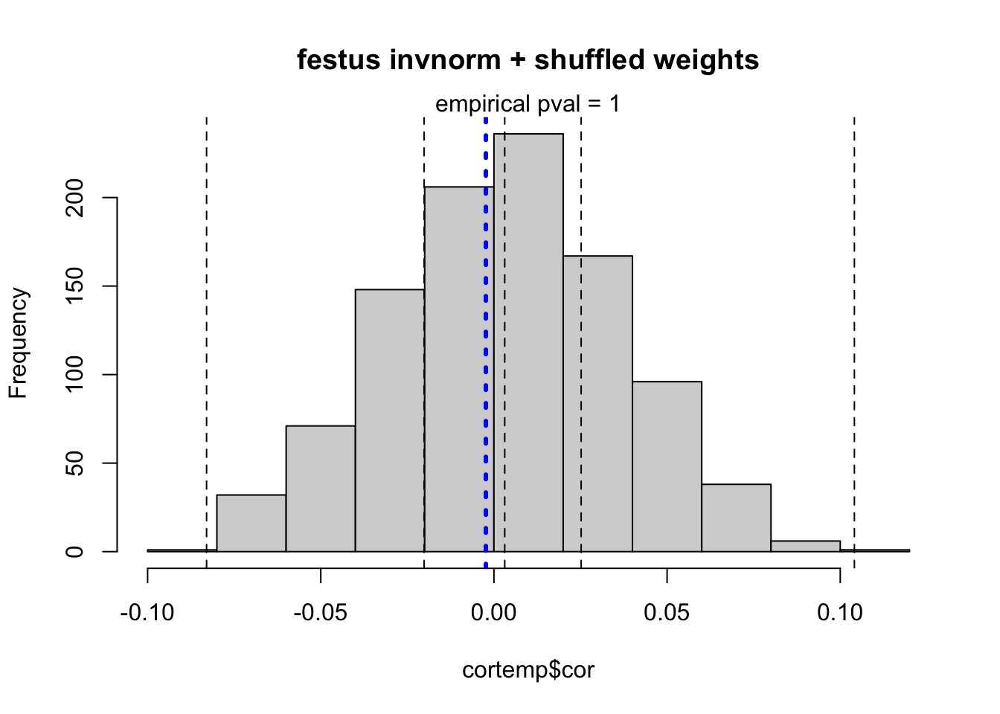
[1] 5642 1002
[1] 5642 1
A sample size of 5642 was used[1] "top positive cor"
[1] 0.09543735 0.08563905 0.08501462 0.08258202 0.07633353 0.07034469
[7] 0.07023361 0.06978680 0.06833520 0.06758597 0.06749081 0.06723520
[13] 0.06716207 0.06686280 0.06659335 0.06630604 0.06569962 0.06548207
[19] 0.06495522 0.06428920 0.06405065 0.06352678 0.06276612 0.06224230
[25] 0.06113237 0.06043564 0.06042676 0.05965682 0.05961229 0.05916940
[1] "top negative cor"
[1] -0.05917220 -0.05986346 -0.05987954 -0.06001535 -0.06030876 -0.06090595
[7] -0.06156823 -0.06171340 -0.06185446 -0.06265165 -0.06293635 -0.06349256
[13] -0.06354876 -0.06402719 -0.06408931 -0.06423462 -0.06515444 -0.06528906
[19] -0.06685736 -0.06725177 -0.06879530 -0.07112897 -0.07278459 -0.07448702
[25] -0.07754594 -0.07810247 -0.08032966 -0.08210120 -0.08610281 -0.08887342
[1] "p-values"
[1] 6.546785e-13 2.209682e-11 9.063987e-11 1.143058e-10 1.559140e-10
[6] 5.115830e-10 6.444501e-10 1.491849e-09 4.179206e-09 5.382491e-09
[11] 9.284519e-09 2.096381e-08 4.367323e-08 8.778798e-08 1.215481e-07
[16] 1.272453e-07 1.528840e-07 2.288434e-07 2.754350e-07 3.715189e-07
[21] 3.858234e-07 4.241425e-07 4.269305e-07 4.394490e-07 4.944637e-07
[26] 4.955217e-07 5.496298e-07 6.149747e-07 7.783608e-07 8.465880e-07
[1] "model_3"Warning in fast_predixcan_assoc(ptrs_df, trait_df, idlist): some of the ids
were not present in the expr or trait df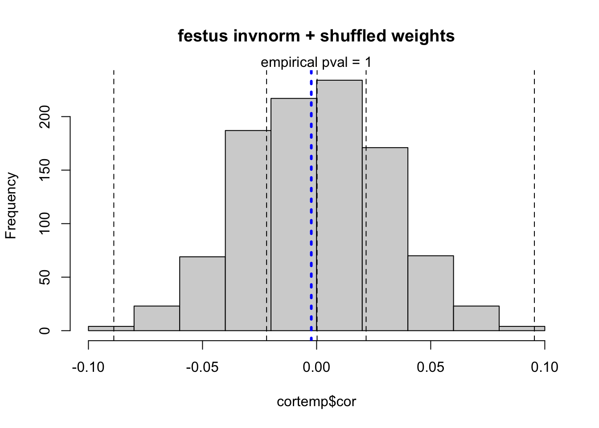
[1] 5642 1002
[1] 5642 1
A sample size of 5642 was used[1] "top positive cor"
[1] 0.10806203 0.09883216 0.09160630 0.08951296 0.08695084 0.08606351
[7] 0.07789924 0.07787461 0.07730422 0.07644352 0.07575622 0.07491975
[13] 0.07377493 0.07269326 0.07220973 0.07151873 0.06870269 0.06847521
[19] 0.06786799 0.06645410 0.06602249 0.06425416 0.06265730 0.06050781
[25] 0.05931447 0.05866071 0.05860889 0.05768853 0.05727214 0.05720852
[1] "top negative cor"
[1] -0.05833736 -0.05843577 -0.05917677 -0.06017024 -0.06034564 -0.06060963
[7] -0.06105926 -0.06120733 -0.06139047 -0.06146361 -0.06329197 -0.06334273
[13] -0.06423462 -0.06475644 -0.06479147 -0.06705039 -0.06792249 -0.06799750
[19] -0.06841733 -0.07014386 -0.07096197 -0.07250107 -0.07265914 -0.07289900
[25] -0.07451478 -0.07785522 -0.07875046 -0.09223455 -0.09715192 -0.09826450
[1] "p-values"
[1] 3.744812e-16 9.625808e-14 1.332498e-13 2.506842e-13 3.759583e-12
[6] 5.260761e-12 1.585384e-11 5.911687e-11 9.244342e-11 3.105912e-09
[11] 4.584697e-09 4.636378e-09 4.677440e-09 6.004502e-09 8.839482e-09
[16] 1.200161e-08 1.735095e-08 2.071157e-08 2.855309e-08 4.159262e-08
[21] 4.540636e-08 4.607072e-08 4.927348e-08 5.575115e-08 7.458495e-08
[26] 9.411326e-08 1.320369e-07 2.375635e-07 2.603651e-07 2.664964e-07
[1] "model_4"Warning in fast_predixcan_assoc(ptrs_df, trait_df, idlist): some of the ids
were not present in the expr or trait df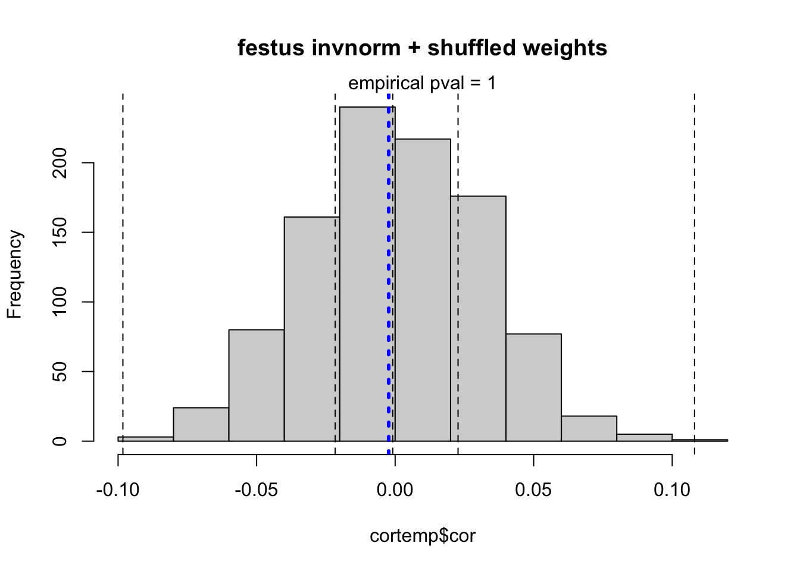
[1] 5642 1002
[1] 5642 1
A sample size of 5642 was used[1] "top positive cor"
[1] 0.10897000 0.08255817 0.08238546 0.08123114 0.08058264 0.07553951
[7] 0.07147759 0.06969716 0.06892888 0.06840539 0.06826932 0.06801265
[13] 0.06799306 0.06654937 0.06639373 0.06581424 0.06548164 0.06506086
[19] 0.06372502 0.06244485 0.06193238 0.06175170 0.06127303 0.06082971
[25] 0.06017787 0.06008130 0.05981114 0.05977707 0.05926728 0.05884288
[1] "top negative cor"
[1] -0.05993633 -0.06018496 -0.06066399 -0.06093758 -0.06156256 -0.06206349
[7] -0.06207515 -0.06300572 -0.06423462 -0.06467528 -0.06475924 -0.06483831
[13] -0.06645170 -0.06706626 -0.06709036 -0.06759581 -0.06907435 -0.06928580
[19] -0.06975836 -0.06997217 -0.07116971 -0.07165993 -0.07236827 -0.07480653
[25] -0.07618342 -0.07699322 -0.07780609 -0.07841772 -0.08041825 -0.08537511
[1] "p-values"
[1] 2.112178e-16 1.303682e-10 5.174914e-10 5.623106e-10 9.754126e-10
[6] 1.324774e-09 1.431130e-09 3.618347e-09 4.783106e-09 6.908317e-09
[11] 9.927146e-09 1.320924e-08 1.823311e-08 5.213012e-08 7.029369e-08
[16] 7.588227e-08 8.630846e-08 1.416927e-07 1.546748e-07 1.585981e-07
[21] 1.875751e-07 2.043979e-07 2.168090e-07 2.677786e-07 2.828145e-07
[26] 3.134257e-07 3.158895e-07 3.700680e-07 4.520658e-07 4.563853e-07
[1] "model_5"Warning in fast_predixcan_assoc(ptrs_df, trait_df, idlist): some of the ids
were not present in the expr or trait df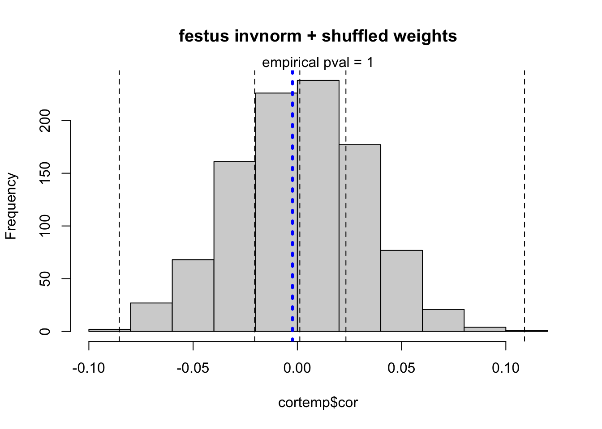
[1] 5642 1002
[1] 5642 1
A sample size of 5642 was used[1] "top positive cor"
[1] 0.10765662 0.10027992 0.09663110 0.09510000 0.09139094 0.08907463
[7] 0.08483820 0.08476656 0.08021886 0.07808619 0.07806939 0.07683110
[13] 0.07278522 0.07204264 0.07190417 0.07134980 0.07050453 0.07048327
[19] 0.06966056 0.06939907 0.06886773 0.06782024 0.06713425 0.06663267
[25] 0.06651042 0.06514952 0.06458204 0.06394134 0.06351813 0.06351449
[1] "top negative cor"
[1] -0.05786976 -0.05789314 -0.05799271 -0.05804339 -0.05819261 -0.06252701
[7] -0.06282779 -0.06307259 -0.06336653 -0.06423462 -0.06425604 -0.06429505
[13] -0.06478638 -0.06538711 -0.06609746 -0.06759278 -0.06791631 -0.06814932
[19] -0.06907308 -0.07181929 -0.07229042 -0.07298344 -0.07473997 -0.07503740
[25] -0.07717437 -0.07798012 -0.07807798 -0.07944049 -0.08410799 -0.09905438
[1] "p-values"
[1] 4.828362e-16 4.164756e-14 8.470966e-14 3.361574e-13 7.892067e-13
[6] 5.899800e-12 1.991004e-11 1.701370e-10 1.762681e-10 2.437335e-10
[11] 1.571337e-09 2.258334e-09 4.210364e-09 4.226159e-09 4.242737e-09
[16] 4.418930e-09 6.366950e-09 7.430572e-09 1.647826e-08 1.877185e-08
[21] 4.011892e-08 4.366145e-08 5.387878e-08 5.983068e-08 6.342928e-08
[26] 6.573783e-08 8.005262e-08 1.137810e-07 1.147856e-07 1.609901e-07
[1] "model_6"Warning in fast_predixcan_assoc(ptrs_df, trait_df, idlist): some of the ids
were not present in the expr or trait df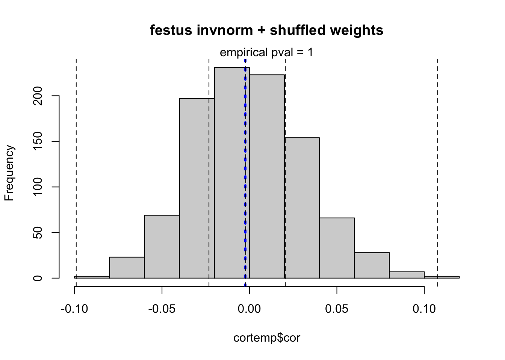
[1] 5642 1002
[1] 5642 1
A sample size of 5642 was used[1] "top positive cor"
[1] 0.10235380 0.09158639 0.08961096 0.08663686 0.08421792 0.08307902
[7] 0.08157264 0.08003618 0.07862786 0.07758017 0.07703386 0.07684103
[13] 0.07643011 0.07565409 0.07419774 0.07305473 0.06823648 0.06683967
[19] 0.06535240 0.06441313 0.06323223 0.06192802 0.06105418 0.06087905
[25] 0.06062668 0.05975845 0.05973591 0.05817271 0.05785820 0.05745016
[1] "top negative cor"
[1] -0.06596323 -0.06669909 -0.06692558 -0.06752878 -0.06783016 -0.06816510
[7] -0.06830800 -0.06870966 -0.06933664 -0.06948950 -0.07001865 -0.07049184
[13] -0.07070590 -0.07240551 -0.07249770 -0.07491200 -0.07534231 -0.07580820
[19] -0.07847474 -0.07976035 -0.07984950 -0.08373475 -0.08484699 -0.08522089
[25] -0.08559321 -0.08704924 -0.08758671 -0.08869161 -0.09466944 -0.10265062
[1] "p-values"
[1] 1.029018e-14 1.228052e-14 1.000844e-12 5.316867e-12 1.506428e-11
[6] 2.427386e-11 4.279317e-11 5.624188e-11 6.928493e-11 1.169495e-10
[11] 1.407525e-10 1.693995e-10 2.309383e-10 2.925522e-10 4.024121e-10
[16] 8.293926e-10 1.711484e-09 1.867250e-09 1.946428e-09 3.285918e-09
[21] 3.525042e-09 5.299643e-09 6.783112e-09 7.397509e-09 8.892595e-09
[26] 1.172832e-08 1.255675e-08 1.441015e-08 1.740997e-08 2.377553e-08
[1] "model_7"Warning in fast_predixcan_assoc(ptrs_df, trait_df, idlist): some of the ids
were not present in the expr or trait df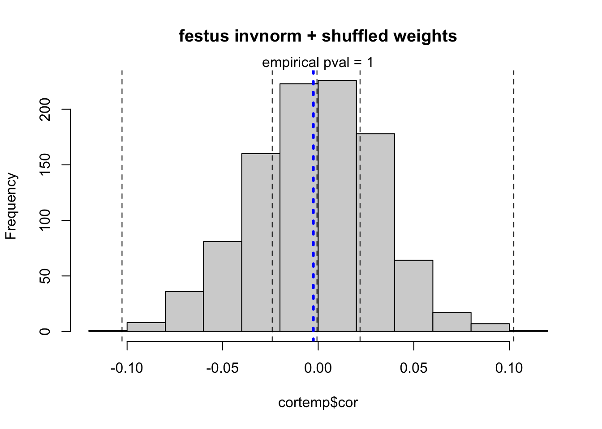
[1] 5642 1002
[1] 5642 1
A sample size of 5642 was used[1] "top positive cor"
[1] 0.10534557 0.09256128 0.09085184 0.08583098 0.08478891 0.08446649
[7] 0.08359322 0.07815072 0.07560620 0.07398260 0.07336642 0.07142466
[13] 0.07138082 0.07121718 0.07071629 0.06839820 0.06750096 0.06733297
[19] 0.06728311 0.06635265 0.06618214 0.06597916 0.06458140 0.06434498
[25] 0.06405535 0.06352477 0.06248539 0.06182497 0.06174043 0.06147083
[1] "top negative cor"
[1] -0.06421847 -0.06423463 -0.06636896 -0.06712237 -0.06723002 -0.06734913
[7] -0.06782769 -0.06934377 -0.06934576 -0.07087543 -0.07232793 -0.07368529
[13] -0.07384155 -0.07698268 -0.07758252 -0.07763171 -0.07800043 -0.07961554
[19] -0.08023651 -0.08043392 -0.08073992 -0.08230505 -0.08750614 -0.09052711
[25] -0.09053615 -0.09116565 -0.09191366 -0.09512361 -0.10374027 -0.12309367
[1] "p-values"
[1] 1.533897e-20 2.018488e-15 5.353084e-15 7.789690e-13 3.154059e-12
[6] 4.464650e-12 6.649671e-12 7.851801e-12 9.275194e-12 9.319499e-12
[11] 4.458733e-11 1.038571e-10 1.743330e-10 2.043775e-10 3.134580e-10
[16] 5.844496e-10 1.230243e-09 1.420644e-09 1.558404e-09 2.082061e-09
[21] 4.088195e-09 4.378239e-09 5.177236e-09 5.294004e-09 6.941146e-09
[26] 1.282560e-08 2.610040e-08 2.774293e-08 2.967948e-08 3.404656e-08
[1] "model_8"Warning in fast_predixcan_assoc(ptrs_df, trait_df, idlist): some of the ids
were not present in the expr or trait df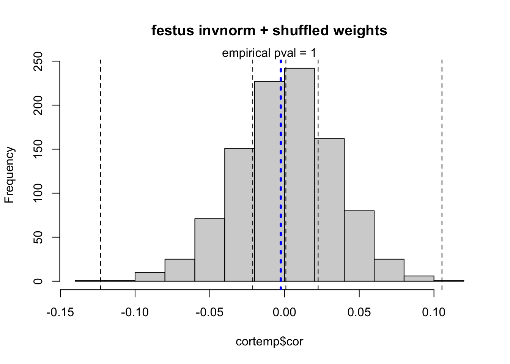
[1] 5642 1002
[1] 5642 1
A sample size of 5642 was used[1] "top positive cor"
[1] 0.10456138 0.09684672 0.09468225 0.09122835 0.09008074 0.08949862
[7] 0.08612371 0.07981563 0.07970081 0.07954820 0.07827623 0.07617611
[13] 0.07591895 0.07515060 0.07496199 0.07361742 0.07321516 0.07309984
[19] 0.07025571 0.06972174 0.06733193 0.06702152 0.06638280 0.06563071
[25] 0.06494588 0.06462581 0.06439018 0.06319904 0.06319561 0.06290469
[1] "top negative cor"
[1] -0.05625635 -0.05708101 -0.05820759 -0.06165070 -0.06226623 -0.06227809
[7] -0.06313104 -0.06423111 -0.06520031 -0.06528255 -0.06530634 -0.06594002
[13] -0.06599504 -0.06680639 -0.06854650 -0.06906451 -0.07173738 -0.07193396
[19] -0.07255330 -0.07297977 -0.07421088 -0.07477693 -0.07500256 -0.07691830
[25] -0.08090639 -0.08371378 -0.08432571 -0.08696412 -0.09127833 -0.09177140
[1] "p-values"
[1] 3.256552e-15 2.977658e-13 9.938055e-13 4.817243e-12 6.263642e-12
[6] 6.432063e-12 1.178327e-11 1.597266e-11 5.872081e-11 8.969431e-11
[11] 2.190305e-10 2.955614e-10 1.137355e-09 1.896955e-09 2.001125e-09
[16] 2.148222e-09 3.860361e-09 7.145068e-09 9.959501e-09 1.116601e-08
[21] 1.567888e-08 1.673213e-08 1.703263e-08 1.847081e-08 2.364017e-08
[26] 3.056091e-08 3.633015e-08 3.817012e-08 4.018178e-08 4.819200e-08
[1] "model_9"Warning in fast_predixcan_assoc(ptrs_df, trait_df, idlist): some of the ids
were not present in the expr or trait df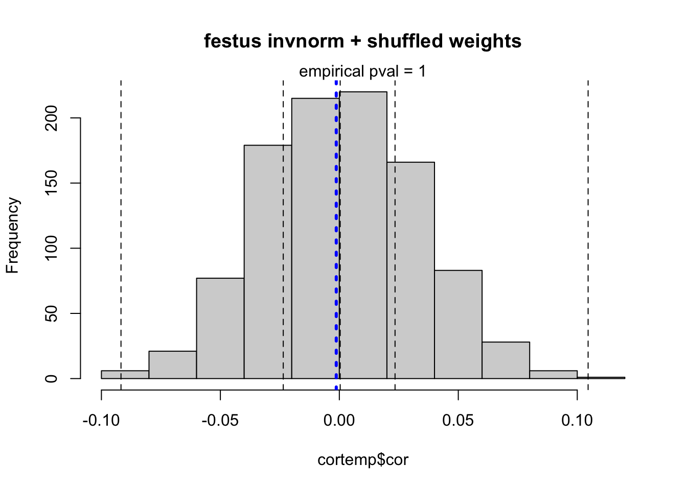
[1] 5642 1002
[1] 5642 1
A sample size of 5642 was used[1] "top positive cor"
[1] 0.09951210 0.09126589 0.08310505 0.07951459 0.07729404 0.07376209
[7] 0.07335790 0.07278170 0.07216418 0.07196513 0.07180674 0.07177355
[13] 0.07150689 0.07000328 0.06870484 0.06865128 0.06797825 0.06763108
[19] 0.06706892 0.06674672 0.06638554 0.06625362 0.06604412 0.06594536
[25] 0.06539105 0.06506245 0.06408736 0.06337004 0.06314466 0.06305701
[1] "top negative cor"
[1] -0.06423116 -0.06433491 -0.06440559 -0.06457746 -0.06485310 -0.06522098
[7] -0.06663779 -0.06682102 -0.06703744 -0.06712851 -0.06763539 -0.06773989
[13] -0.06897541 -0.06909487 -0.06914307 -0.06950652 -0.06962366 -0.07355552
[19] -0.07372416 -0.07399588 -0.07595637 -0.07623875 -0.07777776 -0.07842437
[25] -0.07930168 -0.08088536 -0.08458619 -0.08898754 -0.09487618 -0.10785638
[1] "p-values"
[1] 4.260573e-16 6.504461e-14 8.930624e-13 6.305138e-12 2.082930e-11
[6] 1.926753e-10 3.973700e-10 1.148701e-09 2.182015e-09 2.408369e-09
[11] 3.607343e-09 4.845084e-09 6.032176e-09 9.685406e-09 1.098205e-08
[16] 2.595077e-08 2.871183e-08 2.918582e-08 3.138692e-08 3.417136e-08
[21] 4.372710e-08 5.683563e-08 6.181979e-08 6.608605e-08 6.701548e-08
[26] 7.495595e-08 1.398938e-07 1.634363e-07 1.714445e-07 1.987770e-07
[1] "model_10"Warning in fast_predixcan_assoc(ptrs_df, trait_df, idlist): some of the ids
were not present in the expr or trait df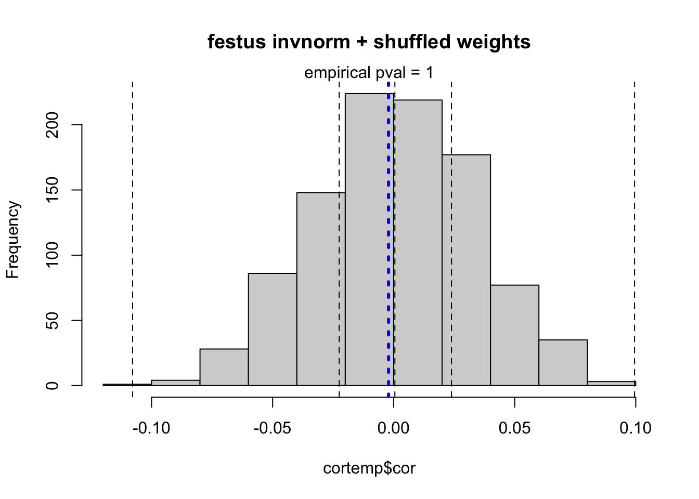
[1] 5642 1002
[1] 5642 1
A sample size of 5642 was used[1] "top positive cor"
[1] 0.09484547 0.08913198 0.08716583 0.08542676 0.08380221 0.08238456
[7] 0.08116788 0.07711088 0.07642933 0.07186414 0.06896196 0.06881527
[13] 0.06854491 0.06821238 0.06621516 0.06607243 0.06606746 0.06559698
[19] 0.06398400 0.06374958 0.06304068 0.06075686 0.06055179 0.05945317
[25] 0.05896505 0.05869721 0.05701725 0.05691915 0.05684329 0.05679794
[1] "top negative cor"
[1] -0.06359206 -0.06420061 -0.06429398 -0.06540121 -0.06555658 -0.06575516
[7] -0.06597459 -0.06610457 -0.06687526 -0.07016428 -0.07074321 -0.07097338
[13] -0.07146064 -0.07147410 -0.07252356 -0.07253753 -0.07519839 -0.07528918
[19] -0.07566703 -0.07587400 -0.07656203 -0.08536965 -0.08667001 -0.08780401
[25] -0.09210214 -0.09440792 -0.09513681 -0.09709561 -0.10595038 -0.11599993
[1] "p-values"
[1] 2.129674e-18 1.392365e-15 2.587830e-13 7.732985e-13 9.083207e-13
[6] 1.155601e-12 4.036208e-12 1.932659e-11 3.829884e-11 5.301213e-11
[11] 6.813567e-11 1.270601e-10 1.307224e-10 2.830728e-10 5.625551e-10
[16] 1.005084e-09 6.551807e-09 8.383181e-09 8.895702e-09 1.139104e-08
[21] 1.248504e-08 1.475139e-08 1.535280e-08 4.851621e-08 4.880496e-08
[26] 6.450801e-08 7.599318e-08 7.642295e-08 9.366728e-08 1.030690e-07
[1] "model_11"Warning in fast_predixcan_assoc(ptrs_df, trait_df, idlist): some of the ids
were not present in the expr or trait df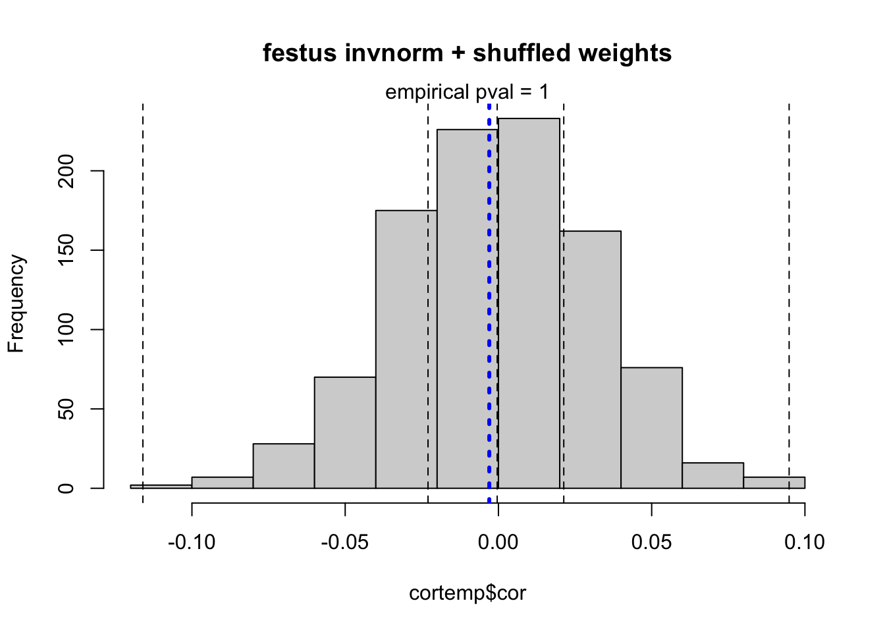
[1] 5642 1002
[1] 5642 1
A sample size of 5642 was used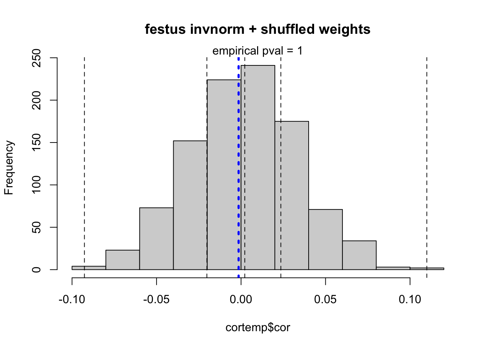
[1] "top positive cor"
[1] 0.10992207 0.10573179 0.08857707 0.08345202 0.08188634 0.07876488
[7] 0.07801787 0.07678405 0.07671207 0.07555249 0.07524735 0.07365918
[13] 0.07125785 0.07018975 0.07014028 0.06951157 0.06791353 0.06781596
[19] 0.06696477 0.06654173 0.06610032 0.06576226 0.06531760 0.06403991
[25] 0.06340251 0.06324967 0.06283655 0.06275605 0.06274067 0.06271013
[1] "top negative cor"
[1] -0.05922226 -0.05954082 -0.05961407 -0.06054950 -0.06076393 -0.06105691
[7] -0.06141938 -0.06248218 -0.06326336 -0.06402068 -0.06455878 -0.06457525
[13] -0.06490601 -0.06539047 -0.06605728 -0.06964718 -0.06971156 -0.06975042
[19] -0.07127605 -0.07149125 -0.07321386 -0.07325923 -0.07498268 -0.07646551
[25] -0.07696677 -0.07883387 -0.08306364 -0.08332816 -0.08543484 -0.09267303
[1] "p-values"
[1] 1.152685e-16 1.592745e-15 2.969781e-12 2.575165e-11 1.265503e-10
[6] 3.357653e-10 3.566043e-10 4.054227e-10 7.141879e-10 2.988962e-09
[11] 3.085384e-09 4.343571e-09 6.991013e-09 7.589196e-09 7.838244e-09
[16] 8.753046e-09 1.313372e-08 1.502554e-08 1.687874e-08 3.001563e-08
[21] 3.564986e-08 3.635037e-08 7.544895e-08 8.255936e-08 8.318981e-08
[26] 1.295657e-07 1.322314e-07 1.551788e-07 1.576664e-07 1.618728e-07
sessionInfo()R version 4.2.2 (2022-10-31)
Platform: x86_64-apple-darwin17.0 (64-bit)
Running under: macOS Big Sur ... 10.16
Matrix products: default
BLAS: /Library/Frameworks/R.framework/Versions/4.2/Resources/lib/libRblas.0.dylib
LAPACK: /Library/Frameworks/R.framework/Versions/4.2/Resources/lib/libRlapack.dylib
locale:
[1] en_US.UTF-8/en_US.UTF-8/en_US.UTF-8/C/en_US.UTF-8/en_US.UTF-8
attached base packages:
[1] stats graphics grDevices utils datasets methods base
other attached packages:
[1] rhdf5_2.42.0 vroom_1.6.1 RSQLite_2.3.0 R.utils_2.12.2
[5] R.oo_1.25.0 R.methodsS3_1.8.2 data.table_1.14.8 glue_1.6.2
[9] lubridate_1.9.2 forcats_1.0.0 stringr_1.5.0 dplyr_1.1.1
[13] purrr_1.0.1 readr_2.1.4 tidyr_1.3.0 tibble_3.2.1
[17] ggplot2_3.4.1 tidyverse_2.0.0 workflowr_1.7.0
loaded via a namespace (and not attached):
[1] nlme_3.1-162 fs_1.6.1 usethis_2.1.6
[4] devtools_2.4.5 bit64_4.0.5 httr_1.4.5
[7] rprojroot_2.0.3 gh_1.4.0 tools_4.2.2
[10] profvis_0.3.7 bslib_0.4.2 utf8_1.2.3
[13] R6_2.5.1 mgcv_1.8-42 DBI_1.1.3
[16] colorspace_2.1-0 rhdf5filters_1.10.0 urlchecker_1.0.1
[19] withr_2.5.0 tidyselect_1.2.0 prettyunits_1.1.1
[22] processx_3.8.0 bit_4.0.5 curl_5.0.0
[25] compiler_4.2.2 git2r_0.31.0 textshaping_0.3.6
[28] httr2_0.2.2 cli_3.6.0 labeling_0.4.2
[31] sass_0.4.5 scales_1.2.1 callr_3.7.3
[34] rappdirs_0.3.3 systemfonts_1.0.4 digest_0.6.31
[37] rmarkdown_2.20 pkgconfig_2.0.3 htmltools_0.5.4
[40] sessioninfo_1.2.2 highr_0.10 fastmap_1.1.1
[43] htmlwidgets_1.6.2 rlang_1.1.0 rstudioapi_0.14
[46] shiny_1.7.4 farver_2.1.1 jquerylib_0.1.4
[49] generics_0.1.3 jsonlite_1.8.4 magrittr_2.0.3
[52] Matrix_1.5-3 Rhdf5lib_1.20.0 Rcpp_1.0.10
[55] munsell_0.5.0 fansi_1.0.4 lifecycle_1.0.3
[58] stringi_1.7.12 whisker_0.4.1 yaml_2.3.7
[61] pkgbuild_1.4.0 grid_4.2.2 blob_1.2.4
[64] parallel_4.2.2 promises_1.2.0.1 crayon_1.5.2
[67] lattice_0.20-45 miniUI_0.1.1.1 splines_4.2.2
[70] hms_1.1.3 knitr_1.42 ps_1.7.3
[73] pillar_1.9.0 pkgload_1.3.2 evaluate_0.20
[76] getPass_0.2-2 remotes_2.4.2 vctrs_0.6.1
[79] tzdb_0.3.0 httpuv_1.6.9 gtable_0.3.3
[82] cachem_1.0.7 xfun_0.37 mime_0.12
[85] xtable_1.8-4 gitcreds_0.1.2 later_1.3.0
[88] ragg_1.2.5 memoise_2.0.1 timechange_0.2.0
[91] ellipsis_0.3.2